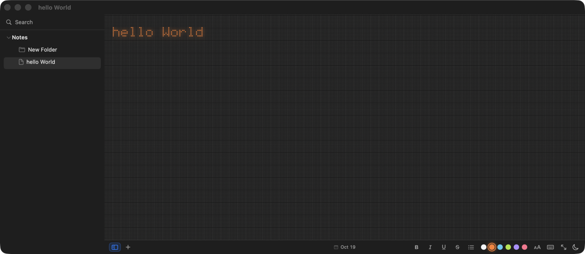
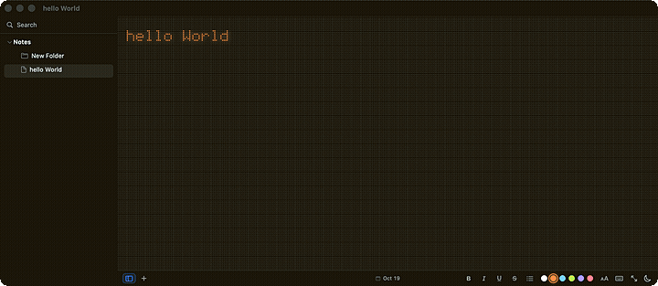

Open it, type, close it. That's it. Every character is drawn dot by dot on a dim field — the text is never drawn, the dots are. Plain .rtf files in a plain folder, automatic saving, seven languages.

No syntax, no markers, nothing to interpret. What you type is what is saved — smart quotes and substitutions are off, so a # is a #.
237 hand-built glyphs drawn dot by dot on a dim field — the way a Nothing-OS display lights up. café, über, Kraków all render as themselves.
The editor is live from the first moment. A wordmark greets an empty library and vanishes at the first keystroke; it never blocks typing.
Bold, italic, underline, strikethrough, lists and per-run colour from the Format menu or status bar. Stored as attributes — never as markup.
Each note is a plain .rtf in a plain folder. Folders nest, notes and folders drag between them, and everything is yours on disk.
A query searches every note, case- and accent-insensitively, and shows the line it was found on.
Press play and the note is retyped cell by cell, silently, at a chosen pace.
Export a note as a PNG drawn through the same matrix the editor uses — dots, glow, colours and theme all in the picture.
System, Light and Dark; six ink colours; text size from 30% to 150%. Preferences persist across launches.
English, Spanish, French, German, Portuguese, Italian, Dutch — following the Mac by default.
Edits debounced at 0.4 s and written to disk, flushed again on note switch, window close and quit. Nothing blocks typing.
Selection, copy/paste, undo/redo, find bar (⌘F), spell checking, standard macOS shortcuts.
Reduce Motion, Reduce Transparency and VoiceOver are honoured. Comfortable defaults out of the box.
The dots, the glow, the colours — all live, all on the same field the editor draws on.

Free to download. No accounts, no analytics, no network access. Your notes stay on your disk.
↓ Download FewNote for macOS